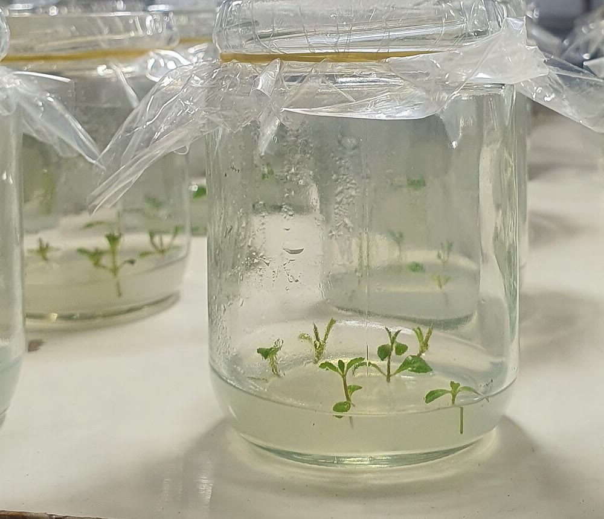

植物细胞工程（下）：应用
本期导读
植物细胞工程（下） · 繁殖 · 育种 · 细胞产物

视频原话 · 导读3 句
- 同学们好！这节课梳理人教版选择性必修三第二章第一节的下半部分——植物细胞工程的应用。9.0s
- 高考常考脱毒苗与抗毒苗的区别、单倍体育种的流程，以及细胞产物工厂化生产。7.9s
- 我们按六个考点梳理，每个考点都讲清楚怎么考、怎么做。5.5s
快速繁殖01#
用于快速繁殖优良品种的植物组织培养技术
属于无性繁殖：保持优良品种的遗传特性
高效、快速地大量繁殖种苗；不受季节、气候限制
对象：观赏植物、经济林木、无性繁殖作物、濒危植物
解题方法
问优点：保持优良品种的遗传特性；高效、快速地实现种苗的大量繁殖
视频原话5 句
- 考点一，快速繁殖，也叫微型繁殖。它是用于快速繁殖优良品种的植物组织培养技术。8.6s
- 优点一：属于无性繁殖，能保持优良品种的遗传特性。5.5s
- 优点二：高效、快速地实现种苗的大量繁殖，而且不受季节和气候的限制。7.4s
- 常用于优良的观赏植物、经济林木、无性繁殖作物和濒危植物的繁殖。6.9s
- 考法：问快速繁殖的优点。解题方法：答“保持优良品种的遗传特性，高效快速地大量繁殖”。9.3s
作物脱毒02#
马铃薯、草莓、香蕉等无性繁殖作物：病毒逐代积累，产量降低、品质变差
切取茎尖
→
组织培养
→
脱毒苗
脱毒苗
组织培养获得；不含病毒，但仍可能再被感染
抗毒苗
基因工程导入抗病毒基因，能抵抗病毒
易错
脱毒 ≠ 抗毒：脱毒苗只是不带病毒，并不具有抗病毒的能力
视频原话4 句
- 考点二，作物脱毒。马铃薯、草莓、香蕉等无性繁殖的作物，感染的病毒会逐代积累，导致产量降低、品质变差。11.6s
- 植物顶端分生区附近，比如茎尖，病毒极少，甚至没有病毒。6.0s
- 切取一定大小的茎尖进行组织培养，再生的植株就可能不带病毒，这就是脱毒苗。8.0s
- 易错：脱毒不等于抗毒。脱毒苗只是不含病毒，种下去仍可能被感染；抗病毒植株要靠基因工程导入抗病毒基因。11.8s
单倍体育种03#
花药（花粉）
离体培养→
单倍体幼苗
一般高度不育
秋水仙素→
纯合二倍体
染色体加倍
选育→
新品种
优点：后代都是纯合子，明显缩短育种年限
花药离体培养体现了生殖细胞（花粉）的全能性
易错
花药离体培养得到的只是单倍体，必须再用秋水仙素处理，才能得到可育的纯合植株
视频原话4 句
- 考点三，单倍体育种。先进行花药离体培养，得到单倍体植株。6.8s
- 再用秋水仙素处理单倍体幼苗，使染色体数目加倍，得到纯合的二倍体，最后从中选育新品种。9.4s
- 它的优点是：后代都是纯合子，能明显缩短育种年限。5.5s
- 易错：花药离体培养得到的只是单倍体，一般高度不育，必须再用秋水仙素处理，才能得到可育的纯合植株。10.7s
突变体的利用04#
培养细胞一直处于不断增殖的状态，容易受培养条件和诱变因素影响而突变
愈伤组织
射线、化学物质→
突变细胞
筛选→
有用的突变体
再分化→
新品种
抗花叶病的甘蔗
筛选抗病突变体
抗盐碱的野生烟草
筛选抗逆突变体
解题方法
选愈伤组织诱变：细胞分裂旺盛，DNA 复制时易突变；突变不定向，所以必须筛选
视频原话4 句
- 考点四，突变体的利用。在组织培养过程中，培养细胞一直处于不断增殖的状态。8.2s
- 所以它们容易受到培养条件和诱变因素，比如射线、化学物质的影响，产生突变。7.8s
- 从中筛选出对人们有用的突变体，培育成新品种，比如抗花叶病的甘蔗、抗盐碱的野生烟草。8.9s
- 考法：为什么选愈伤组织进行诱变？解题方法：答“细胞分裂旺盛，DNA复制时容易发生突变”；突变不定向，所以还要筛选。12.5s
细胞产物工厂化05#
次生代谢物：酚类、萜类、含氮化合物等；不是植物基本生命活动所必需的，含量往往很低
紫杉醇
来自红豆杉
抗肿瘤药物
外植体
→
愈伤组织
→
细胞培养（增殖）
→
提取细胞产物
优点：不占用耕地，几乎不受季节、天气等限制
易错
细胞产物的生产不需要培养成完整植株，培养到细胞（愈伤组织）阶段就可以提取
视频原话5 句
- 考点五，细胞产物的工厂化生产。很多植物产物属于次生代谢物，比如酚类、萜类和含氮化合物。9.9s
- 次生代谢物不是植物基本生命活动所必需的，含量往往很低。5.9s
- 例如从红豆杉中提取的紫杉醇，是一种抗肿瘤药物。5.1s
- 利用植物细胞培养，在离体条件下让细胞增殖，就能大量生产，而且不占用耕地，几乎不受季节、天气限制。10.5s
- 易错：细胞产物的生产不需要培养成完整植株，一般培养到细胞或愈伤组织阶段就可以提取。8.8s
各种应用的比较06#
| 应用 | 起始材料 | 培养到 | 要点 |
|---|---|---|---|
| 快速繁殖 | 优良品种的体细胞 | 完整植株 | 保持遗传特性 |
| 作物脱毒 | 茎尖等分生区 | 完整植株 | 脱毒 ≠ 抗毒 |
| 单倍体育种 | 花药（花粉） | 完整植株 | 秋水仙素加倍 |
| 突变体利用 | 愈伤组织（诱变） | 完整植株 | 突变不定向，需筛选 |
| 细胞产物生产 | 愈伤组织、细胞 | 细胞阶段 | 不需要再分化 |
解题方法
看目的：要新植株就必须经过再分化；要细胞产物，停在细胞阶段即可
视频原话5 句
- 考点六，各种应用的比较。快速繁殖和作物脱毒，都要培养成完整植株，属于无性繁殖。8.9s
- 单倍体育种从花药开始培养，还要秋水仙素处理，也要得到完整植株。6.8s
- 突变体利用在愈伤组织阶段诱变、筛选，最后也要培育成植株。6.4s
- 只有细胞产物的工厂化生产，培养到细胞阶段就停止，不需要再分化。6.5s
- 解题方法：看目的——要新植株，就必须经过再分化；要细胞产物，停在细胞阶段就行。8.4s
易错速查✓
先自己判断，再点按钮查看对错与解析。
- 1快速繁殖能保持优良品种的遗传特性说法正确。
- 2脱毒苗具有抗病毒的能力说法错误：脱毒苗不含病毒，但不抗病毒
- 3花药离体培养得到的植株一般是纯合子说法错误：得到单倍体，需秋水仙素处理才纯合
- 4愈伤组织细胞分裂旺盛，容易发生突变说法正确。
- 5紫杉醇生产需将细胞培养成完整植株说法错误：只需培养到细胞（愈伤组织）阶段
- 6次生代谢物不是植物生长所必需的说法正确。
要植株就再分化，要产物停在细胞！
视频原话 · 易错速查5 句
- 最后，用六道判断题检验一下。3.6s
- 判断一：快速繁殖能保持优良品种的遗传特性？对。判断二：脱毒苗具有抗病毒能力？错，脱毒不等于抗毒。12.3s
- 判断三：花药离体培养得到的植株一般是纯合子？错，得到的是单倍体。判断四：愈伤组织细胞分裂旺盛，容易突变？对。13.3s
- 判断五：生产紫杉醇要把细胞培养成完整植株？错，培养到细胞阶段即可。判断六：次生代谢物不是植物生长所必需的？对。13.6s
- 六个考点串成一条线：要植株就再分化，要产物停在细胞。我们下期再见！7.5s
图片来源
图片来源：Wikimedia Commons —— Angphotorion《Plant tissue culture》CC BY-SA 4.0（裁切）
Photo: Angphotorion, CC BY-SA 4.0